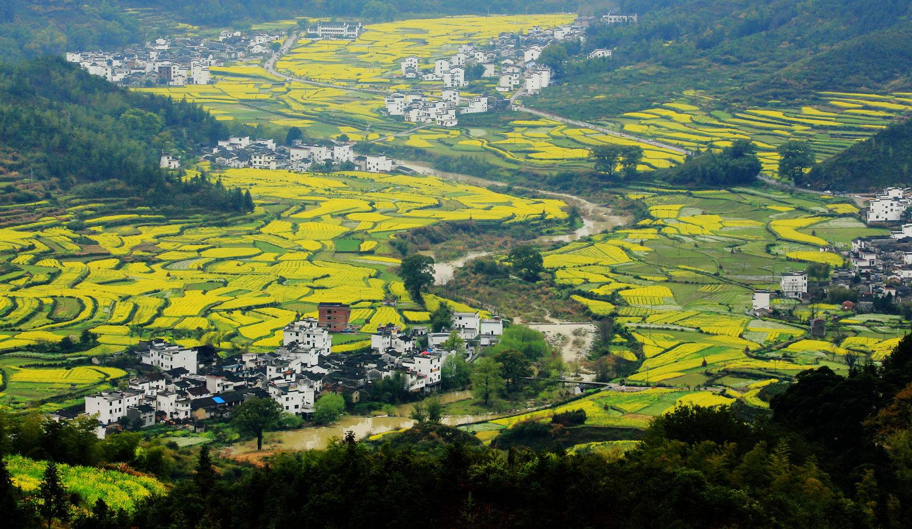
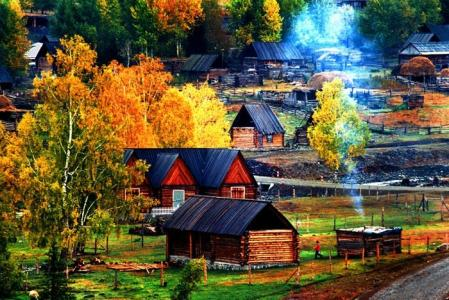
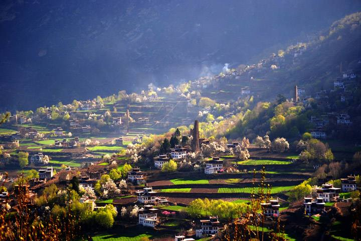

乡村
乡村的日子是母亲的叮咛，随浓浓的晨雾，淡淡的晚炊浮现，常使我思念的波涛如不安的潮汛。
乡村的日子是父亲的辛勤，伴黎明的鸡叫，星夜的蛙鸣萦回，常使我牵挂的目光如暮归的鸟儿。
乡村的日子是小妹的天真，由夏日的莲曲，秋天的渔歌传吟，常使我记忆的帆篷如飞扬的风筝。
最美乡村
初以为，乡村便是童话的乐园。它褪去了城市的浮华，洗尽了尘世的繁杂。
一座座房，一户户窗，牵引着归家游子，是谁，舞动了金秋，让大地芬芳，让房檐挂满飘香

婺源的名字是与春天连在一起的。婺源的春天，蜿蜒连绵的油菜花盛开在山野梯田间，与粉墙黛瓦的徽派建筑一起，构成了一幅绝美的中国水墨山水画。春天的婺源，又是属于一队队旅行团的。游人们穿梭在婺源各个知名的景点间，熙熙攘攘，热闹非凡，在油菜花开得最旺的江岭景区甚至要限客进入。红叶舞西风，秋日的景色往往更胜春朝。

喀纳斯图瓦村与喀纳斯湖相互辉映，融为一体，构成喀纳斯旅游区独具魅力的人文景观和民族风情。图瓦人是我国一支古老的民族，以游牧、狩猎为生。近四百年来，定居喀纳斯湖畔，他们勇敢强悍，善骑术、善滑雪、能歌善舞，现基本保持着比较原始的生活方式。原木垒起的木屋、散布村中、小桥流水、炊烟袅袅、奶酒飘香。古朴的小村景致，象喀纳斯湖一样充满神秘色彩。

丹巴藏寨指的是居住在丹巴县的居民形成的藏族村落，丹巴的山寨，旧称碉楼寨房。碉楼和寨房，原本是两类不同性质的风格建筑，在时光的流逝中，二者已有机地结合在一起。外形上，既有寨房的特征，又有碉楼的形态。碉楼寨房一般为三层，也有四层的，一侧还配有厢房。但不论房屋和厢房如何建造，顶层外缘都环围着黄、黑、白三种色带，形成了嘉绒藏寨的一大特色。
鲤与鲲